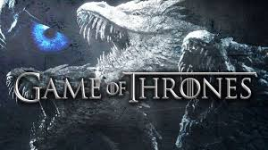

Winter is Coming /
Game of Thrones(season 1, episode 1)

Eddard "Ned" Stark, gets involved in the court politics after the king chooses Eddard to replace his recently deceased chief administrator ("Hand of the King").
The Kingsroad /
Game of Thrones(season 1, episode 2)
Eddard Stark and his daughters accompany the king's entourage to King's Landing to occupy the post of Hand of the King, Tyrion Lannister joins Jon in his travel to the Wall, and the newly wed Daenerys goes with her husband's khalasar to the city of Vaes Dothrak. Meanwhile, in Winterfell a grieving Catelyn Stark watches over her unconscious son Bran.
Cripples, Bastards, and Broken Things /
Game of Thrones(season 1, episode 3)
Lord Eddard Stark, the new Hand of the King, investigates the sudden death of his predecessor. Jon Snow, Eddard's bastard son, defends a new recruit who has just joined the rangers at "the Wall". Exiled prince Viserys becomes increasingly frustrated as the Dothraki horde he needs to invade Westeros and win back his crown continues to linger at Vaes Dothrak.
The Wolf and the Lion /
Game of Thrones(season 1, episode 4)
In the city of King's Landing, the Tourney of the Hand comes to an end while the various factions that plot for power are revealed to the viewer. This delicate balance is undone when news arrives that Tyrion Lannister has been arrested by Catelyn Stark.
Lord Snow /
Game of Thrones(season 1, episode 5)
Jon Snow's training at The Wall; Eddard's arrival at King's Landing, followed by Catelyn, looking for Bran's would-be murderer; Arya reveals her desire to learn sword fighting to her father; Joffrey is given a lesson in ruling the Kingdom by Cersei, and Robert longs for the glory of his past.
The North Remembers
(season 2, episode 1)
With a war on the horizon, the Seven Kingdoms are witnessing an ever-growing clash of kings. The boy king Joffrey Baratheon (Jack Gleeson) sits on the Iron Throne guided by cruelty and deceit, while his honorable counterpart Robb Stark (Richard Madden) of the North heads south to avenge his father's death.
The Night Lands
(season 1, episode 2)
the Night's Watch caravan heading to the Wall is interrupted by a pair of City Watch guards looking for Gendry, the Small Council receives the terms proposed by King in the North Robb Stark, Daenerys waits in the desert for the return of the three riders she had sent out, and Theon Greyjoy returns to his homeland of the Iron Islands.
What Is Dead May Never Die
(season 2, episode 3)
the aftermath of Jon Snow's investigation into Craster, Catelyn Stark's journey to the Stormlands in order to ask for Renly Baratheon's assistance in fighting the Lannisters, Theon's internal conflict as to where his allegiance lies, Tyrion Lannister uses his cunning to find his sister's spy within the Small Council, and Arya is consoled by Yoren before being confronted by soldiers looking for Gendry.
Garden of Bones
(season 2, episode 4)
Ser Jorah Mormont to describe the desert surrounding the city of Qarth to Daenerys.
Game of Thrones
IMDB:9.4/10
Rotten Tomatoes:89%
Tv.com:9/10
Game of Thrones is an American fantasy drama television series created by David Benioff and D. B. Weiss for HBO. It is an adaptation of A Song of Ice and Fire, George R. R. Martin's series of fantasy novels, the first of which is A Game of Thrones. The show was both produced and filmed in Belfast and elsewhere in the United Kingdom. Filming locations also included Canada, Croatia, Iceland, Malta, Morocco, and Spain.[1] The series premiered on HBO in the United States on April 17, 2011, and concluded on May 19, 2019, with 73 episodes broadcast over eight seasons.
Set on the fictional continents of Westeros and Essos, Game of Thrones has several plots and a large ensemble cast and follows several story arcs. One arc is about the Iron Throne of the Seven Kingdoms and follows a web of alliances and conflicts among the noble dynasties either vying to claim the throne or fighting for independence from it. Another focuses on the last descendant of the realm's deposed ruling dynasty, who has been exiled and is plotting a return to the throne, while another story arc follows the Night's Watch, a brotherhood defending the realm against the fierce peoples and legendary creatures of the North.
Game of Thrones attracted a record viewership on HBO and has a broad, active, and international fan base. The series was acclaimed by critics for its acting, complex characters, story, scope, and production values, although its frequent use of nudity and violence (including sexual violence) was criticized; the final season received further criticism for its condensed story and creative decisions, with many considering it a disappointing conclusion. The series received 58 Primetime Emmy Awards, the most by a drama series, including Outstanding Drama Series in 2015, 2016, 2018, 2019. Its other awards and nominations include three Hugo Awards for Best Dramatic Presentation (2012–2014), a 2011 Peabody Award, and five nominations for the Golden Globe Award for Best Television Series – Drama (2012 and 2015–2018). In 2019, the show's final season established a new record for most Emmy nominations received in the same year by any regular series with 32, breaking the 25 years long record of 26 nominations established by NYPD Blue in 1994; it also established Game of Thrones as the drama series with the most overall Emmy nominations, with a total of 161.[2]
Of the ensemble cast, Peter Dinklage has won four Primetime Emmy Awards for Outstanding Supporting Actor in a Drama Series (2011, 2015, 2018, and 2019) and the Golden Globe Award for Best Supporting Actor – Series, Miniseries or Television Film (2012) for his performance as Tyrion Lannister. Alfie Allen, Gwendoline Christie, Emilia Clarke, Nikolaj Coster-Waldau, Lena Headey, Kit Harington, Sophie Turner, Diana Rigg, Carice van Houten, Max von Sydow, and Maisie Williams have also received Primetime Emmy Award nominations for their performances.
<